LAS DIFICULTADES
PAYDAY2 tiene 6 dificultades
Cada dificultad introduce nuevos enemigos especiales, daño y vida de estos y la cantidad que
debemos asegurar.
Partimos desde la dificultad Normal hasta Desolación
NORMAL
Esta dificultad es la mejor para tu primer partida.
En las oleadas hay muchos menos enemigos y estos hacen muy poco daño.
El enemigo especial que nos presenta esta dificultad son Los Escudos.
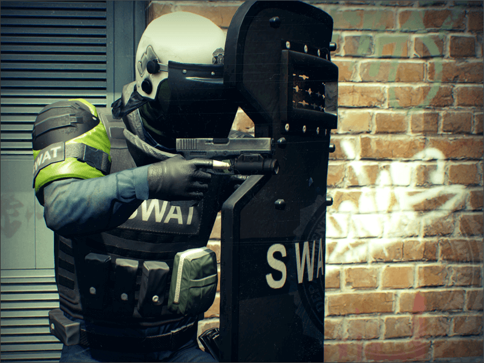Capaces de repeler nuestros disparos, nos lo presentan como el primer enemigo especial
Las formas de matarlo seria agarrandole la espalda o con un arma capaz de atravesar su escudo
Snipers
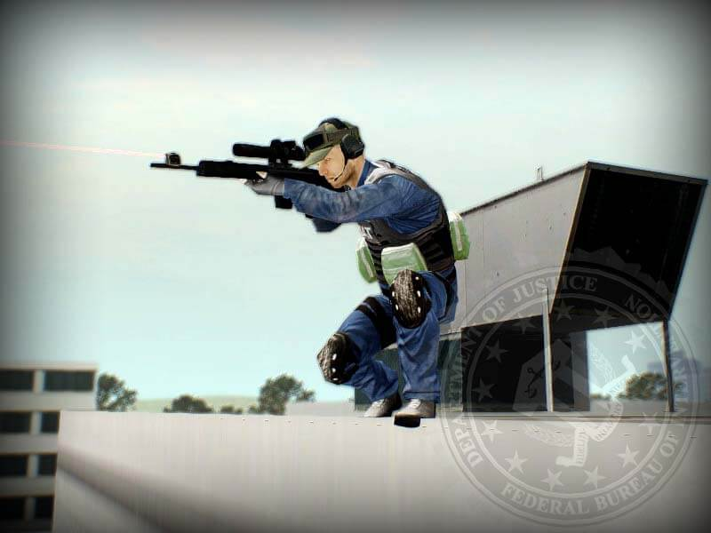Buscan una posicion elevada en el mapa y dispara aquellos que entren en su campo de visión
Un disparo de un sniper atraviesa tu blindaje, osea, te hace daño a tu blindaje y a tu vida.
DIFICIL
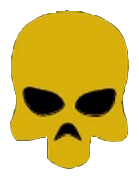Esta dificultad es ideal para aquellos que ya hicieron su primer mision.
En las oleadas vienen mas enemigos y hacen un poco mas de daño.
El enemigo especial que nos introduce esta dificultad es El Taser.
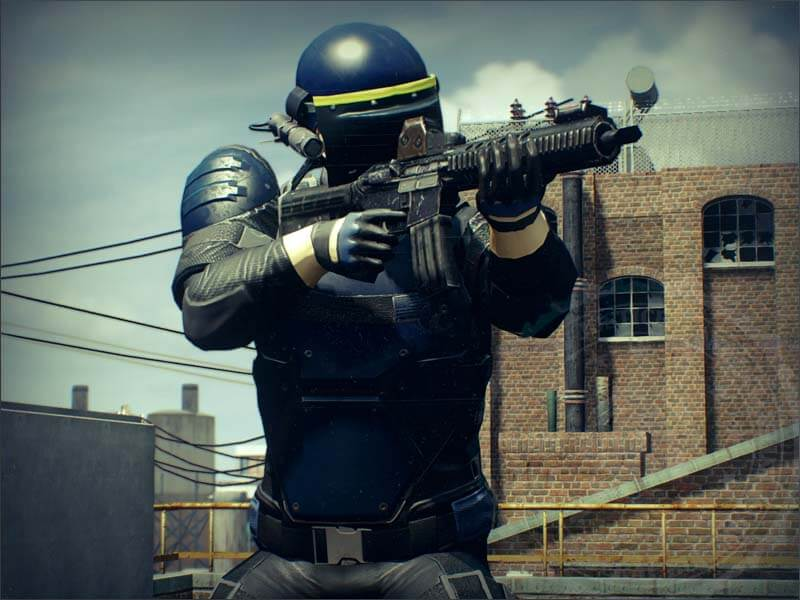Es capaz de aturdirnos con electricidad, logrando que nos quedemos paralizados y dejarnos al
descubierto de los demas enemigos.
Si te aturde por mucho tiempo, te incapacita pero no pierdes vidas.
MUY DIFICIL
Sube un poco más la dificultad comparando con Dificil, pero nos introduce a 4 enemigos especiales.
El Bulldozer
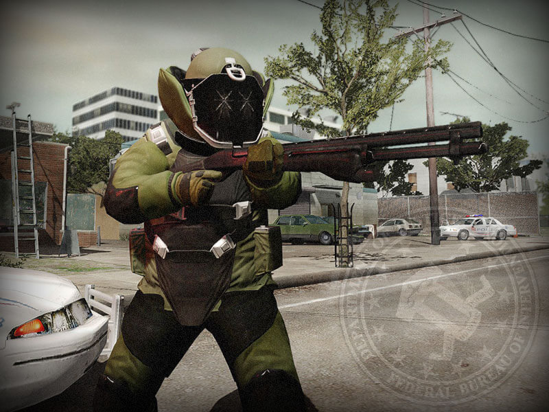Capaz de repeler gran cantidad de tiros, corre hacia los ladrones para matarlos a quemarropa.
La unica forma de matarlo es destruyendo sus plaquetas blindadas de su cabeza o usar un arma muy
potente para atravesar su blindaje.
Cloacker

Busca aquellos que esten distraido y es capaz de incapacitarte instantaneamente de una
patada.
Si escuchas un ruido de interferencia, presta atención, porque esta cerca. Si la interferencia
se maximiza va por ti.
Capitan Winters
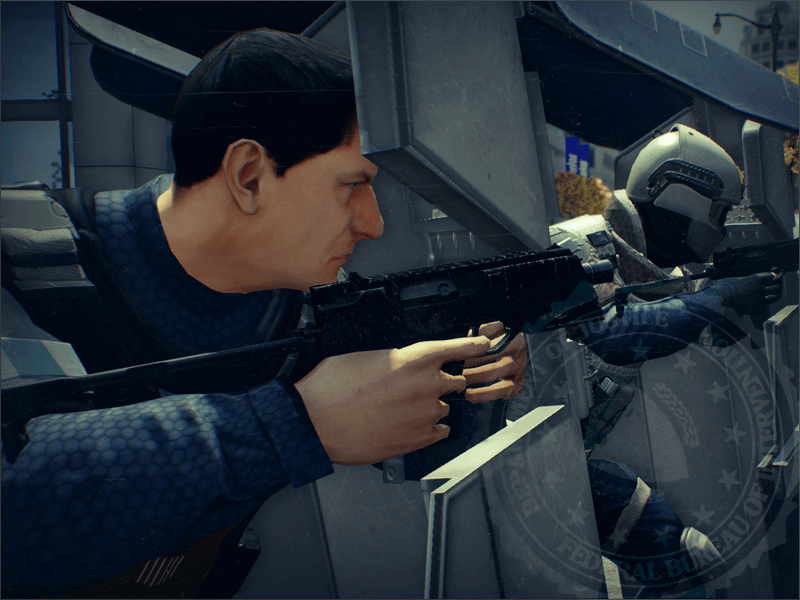Solo aparece en Crime.Net Online y en ciertas misiones.
Escucharas un grito por megafono cuando este haga prescencia, vendra junto con otros 9 escudos.
El te esperara en alguna ubicacion del mapa, si no lo matas la oleada sera infinita y los enemigos tendra resistencia al daño.
Torreta Swat
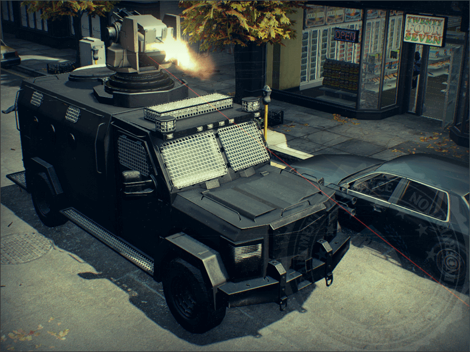Sale en ciertas misiones, escucharas por megafono cuando viene en camino y una vez que
llegue.
La torreta tiene una gran cadencia y dispara a todo aquel que entre en su campo de visión.
Si el laser esta en amarillo quiere decir que esta recargando, usa ese tiempo a tu favor.
No te acerques mucho o se defendera con gas lacrimogeno.
OVERKILL
La mejor dificultad para aquellos que ya conocen lo basico del juego.
Los enemigos haran más daño y tendran más vida, ademas tendras a El Medico
No hacen mucho daño, ni tienen mucha vida, pero son capaces de revivir aliados cercanos al
instante.
Presta mucho atencion si estan al lado de un Bulldozer o un Taser, pueden darles una segunda
chance con tal de incapacitarte.
Los medicos no son capaces de revivir cloackers.
Bulldozer Negro
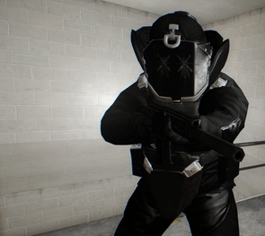A diferencia del Bulldozer Verde, lleva una escopeta automatica.
Dispara mucho más rapido y puede hacer mucho daño a media dintacia.
DEVASTACIÓN
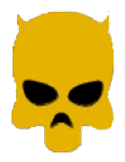La diferencia con overkill es minima, los enemigos hacen un poco más de daño y tienen más
vida.
La unica diferencia notable es que una vez te levanten al ser incapacitado, tendras mucha menos
vida.
ANIQUILACIÓN
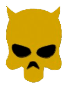Los enemigos hacen mucho más daño y tienen muchas más vida.
Ademas, esta dificultad nos presenta 2 bulldozers que nos la complicaran mucho.
Skulldozer
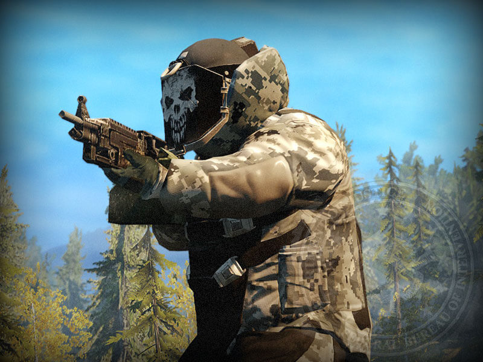Armado con una ametralladora pesada, es capaz de hacer grandes cantidades de daño sin importar la
distancia.
Dato curioso: Este bulldozer sale rara vez en la dificultad Devastación.
Minigun Dozer
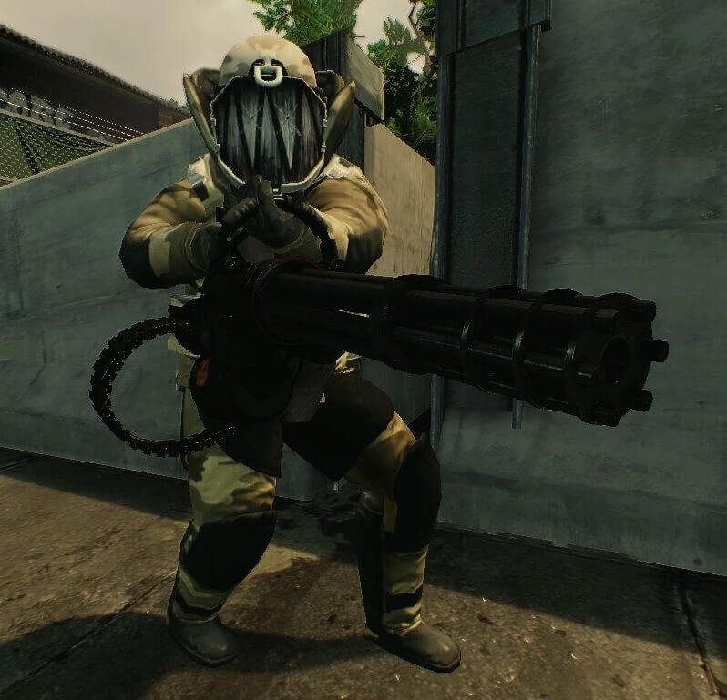Armado con una minigun, un arma con una cadencia bestial.
Este bulldozer es capaz de hacer grandes cantidades de daño sin importar la distancia, ademas,
es el bulldozer con mas vida.
DESOLACIÓN
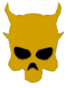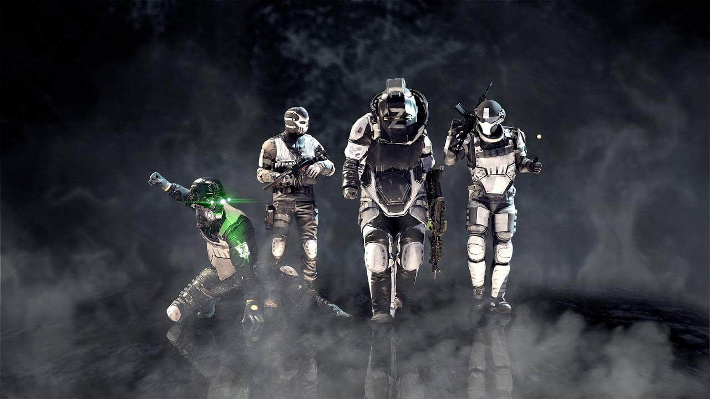
Esta dificultad te presenta a La Fuerza Zeal.
La unidad mas dificil a la que te enfrentaras.
Hacen una gran cantidad de daño, mucha más vida, oleadas mas largas y se anula la reducción de
daño por distancia.
Y conoceras al ultimo enemigo especial, el Medic Dozer.
El mismo rol que el medico, revive a aquellos que esten cerca.
Hace poco daño comparado a los otros bulldozers, pon tu atención en el antes que cualquier otro
enemigo.
UNA VIDA
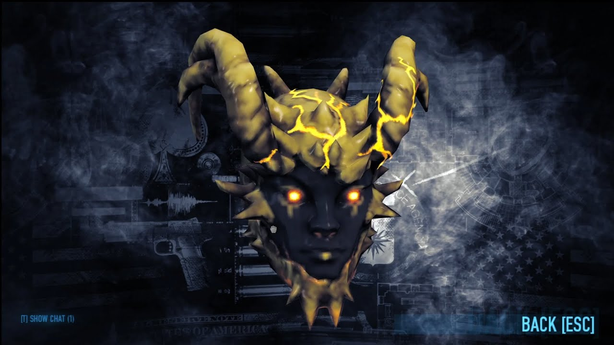
¿Te vez capaz de pasar todas las misiones en una vida y en la maxima
dificultad?
Esta mascara demostrara lo loco que estas.